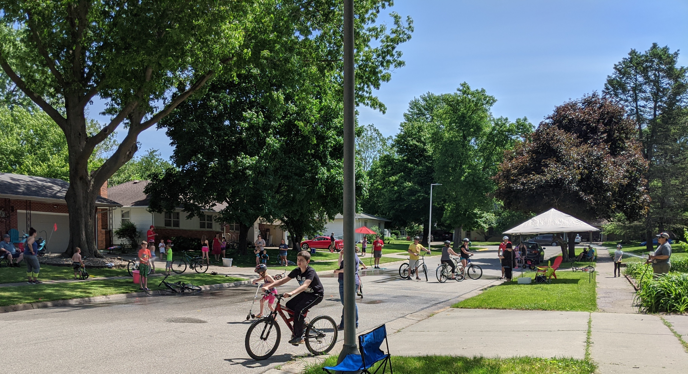
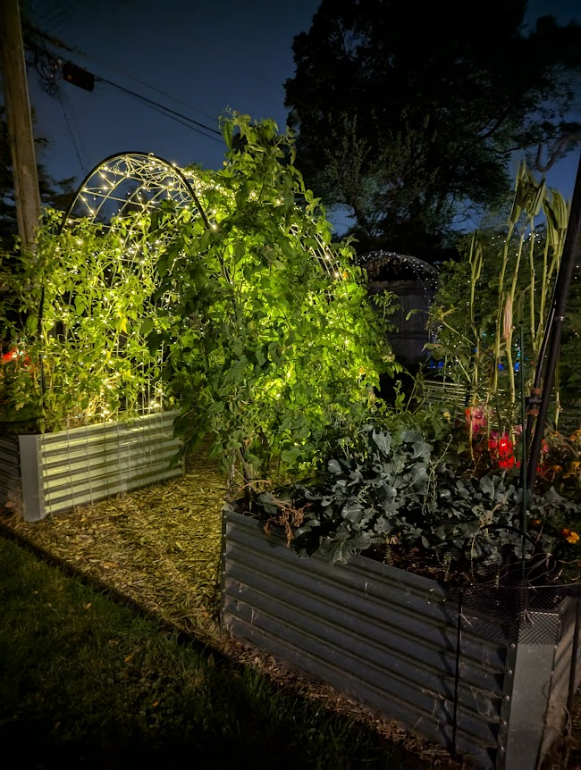
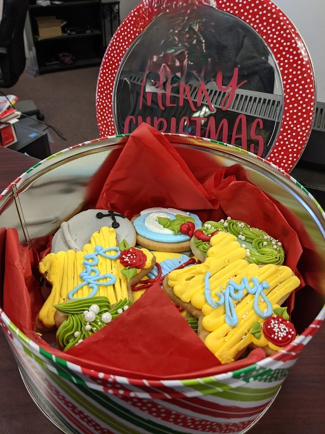
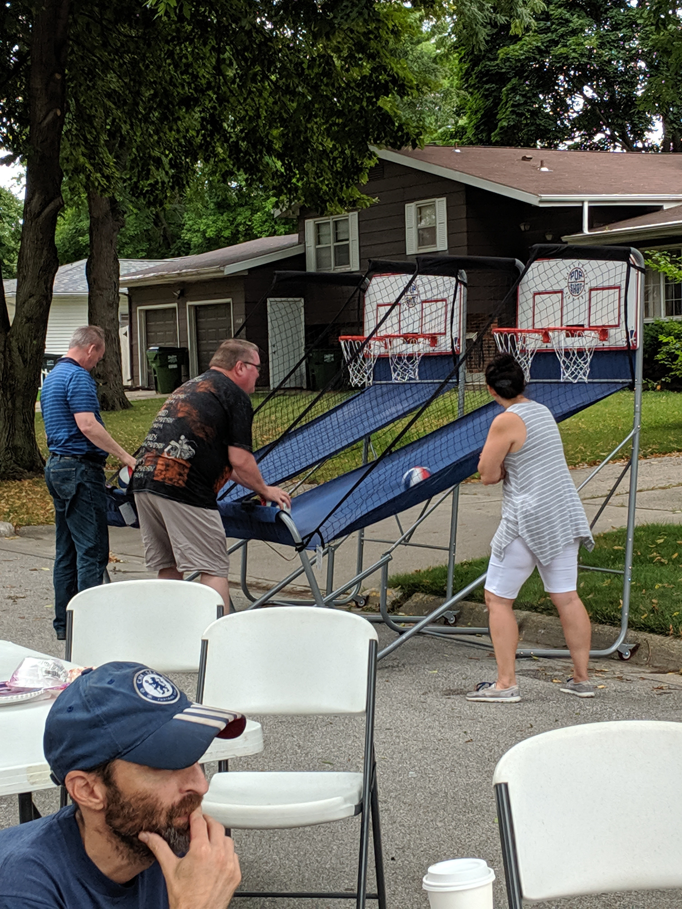

Global Citizenship Begins at Home
I live in a small neighborhood of only a dozen or so homes, but it represents a world much larger than its size. Within these few houses are people from China, Saudi Arabia, South Africa, England, and across the United States. We have LGBTQ families, households living with physical and mental disabilities, long-term residents, recent arrivals, and neighbors who work or teach at Iowa State University. Nearly everyone here has a background in higher education, and most of us have lived in other states or countries, bringing our own stories, traditions, and histories with us.
What makes this neighborhood special is not only its diversity, but the way that diversity naturally blends into a community culture of sharing, support, and learning. We host yearly block parties where we bring dishes from our gardens or kitchens and swap stories about our work, our families, and our traditions. Four households raise chickens, and almost everyone gardens to some degree. Vegetables, eggs, baked goods, extra seedlings, and homemade treats circulate from house to house throughout the year. Nothing is formally organized; it grows from kindness, habit, and a shared understanding that community is strongest when everyone contributes what they can.
Our neighborhood sits right next to rental properties that appear to house families who might struggle with food insecurity. Just one block away, a former home for children in difficult circumstances is now being rebuilt into an alternative high school. These places are quiet reminders that stability, safety, and plenty are not universal. They also show how global issues such as poverty, hunger, and inequality take shape at the local level, sometimes only a few steps away from where we live. This makes it easy to see why global citizenship matters, because whether we recognize it or not, we live alongside people whose experiences are shaped by systems far larger than our own street.
Living here has taught me that global citizenship does not require crossing borders. It can begin with noticing who lives around us, listening to the stories of our neighbors, sharing resources, and choosing to support the people in closest reach. Food sharing, community gardening, and simple acts of connection help reduce small-scale hunger and build social support networks that strengthen everyone. Education is the quiet thread that ties all of this together, not only formal schooling but the ongoing learning that happens when people from different backgrounds live side by side and choose to care for one another.
For me, global citizenship begins with the belief that community can be cultivated. It begins at home, with the people who live nearest to us, and with the understanding that every small act of compassion is part of a much larger effort to build a more equitable, connected, and sustainable world.